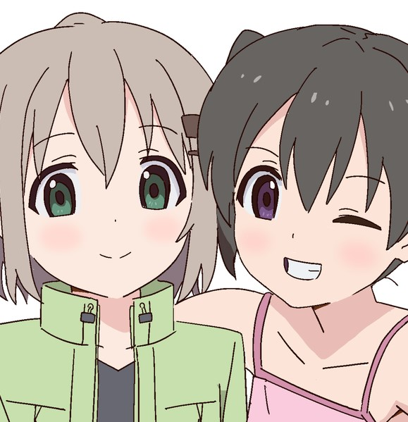

前进吧！登山少女
登山少女赛高！！！

登山少女！！
故事讲述喜欢室内活动及患有惧高症的主角葵（あおい），
在重遇喜欢户外活动的青梅竹马朋友日向（ひなた）后，
因希望能像儿时在山顶看日出，而再次进行登山活动。在故事中，
是以主角的视点进行描述。
主角团
- 雪村葵（雪村あおい／ゆきむら あおい Yukimura Aoi）
- 仓上日向（倉上ひなた／くらうえ ひなた Kuraue Hinata）
- 齐藤枫（斎藤楓／さいとう かえで Saitō Kaede）
climbing together…
登山少女